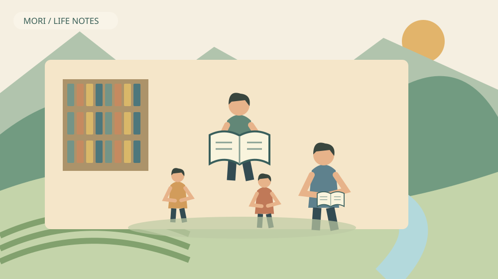
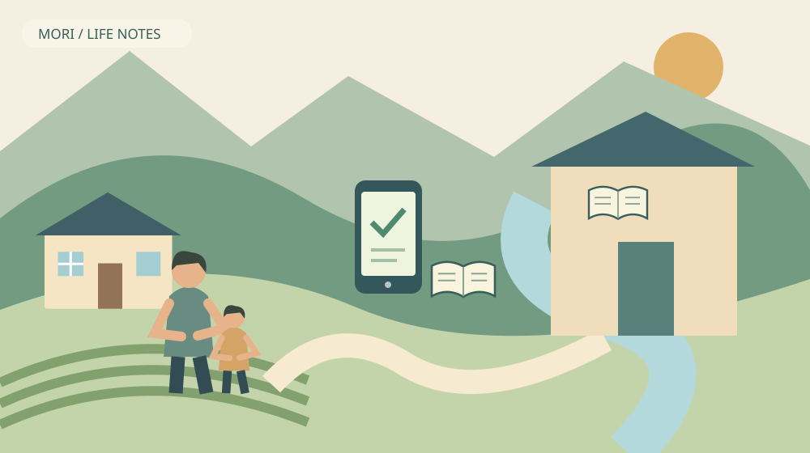

森町の読み聞かせ｜親子で通える場所を知る
Q. 森町で、親子が読み聞かせに参加できる場所はありますか？
A. 森町児童館の「おはなしぶらんこ」や、子育て支援センターの「森のくまさん広場」が確認先です。通常日程と実際の開催日は分け、最新案内で対象・申込み・変更の有無を確かめてください。11月1日に読み聞かせが開かれるという案内ではありません。
読んでもらえる場所が、親子の暮らしを支える
森町で子どもに本を読んでいる家族や地域の方には、準備する時間があります。本を選び、子どもの様子を見て、片付ける。読み聞かせの時間だけが活動ではありません。地域の居場所を考えるときは、読み手がすでに担っている仕事と、連れてくる家族の移動の負担を一緒に見たいと思います。
大石浩之（磐田市／不動産業）です。私は森町の外で暮らしています。移住先を考える際、住宅の広さだけで親子の日常は決まりません。気負わず外へ出られる行き先があるか、家に戻るまでの段取りを回せるか。今回は「読み聞かせに参加する」という一つの目的から、森町の暮らしを見ます。
2026年11月1日は日曜日で、読書週間の期間中です。袋井市立図書館の2026年10月号では、第80回読書週間を10月27日から11月9日と案内しています。これは本に親しむ季節のきっかけです。森町で当日どんな催しが開かれるかを、その期間だけから判断することはできません。
この記事では2026年11月1日に確認した森町の公式案内を使います。施設の通常の活動紹介と、その月の開催確定情報は区別します。読み聞かせへ行きたい親子が、いつ、どこへ、何を確かめればよいかを整理する内容です。会の様子を私が見学したという体験談ではありません。
森町児童館の「おはなしぶらんこ」を確認する
森町児童館の公式活動一覧には、「おはなしぶらんこ」が第2・第4土曜日の10時30分からと掲載されています。所在地は森町森50-1、森町保健福祉センター2階です。問い合わせ先は0538-85-2839です。まず通常の曜日と場所を、家族の予定表に仮の確認先として置けます。
ただし、公式ページには日程や内容が変わる場合があると書かれています。第2土曜日を暦から計算しただけで、参加日を確定してはいけません。最新の行事案内や施設への問い合わせで、実施の有無と受付の方法を確認してください。2026年11月の個別開催日を、この通常一覧だけから断定しません。
児童館の利用対象は0歳から18歳未満の子どもで、町内外を問いません。小学生未満の子は保護者の同伴が必要です。森町への移住を検討している親子にも、利用条件を確認する入口があります。一方、施設全体の利用対象と各活動の対象年齢が同じかどうかは、別に確かめる事項です。
私は、問い合わせるときに子の年齢を先に伝えると話を絞りやすいと考えます。「初めて参加したい」「きょうだいも一緒」「途中で席を外すかもしれない」。家庭の事情を短く伝え、参加方法を確認するためです。個別の配慮が必ず受けられると期待する前に、施設側と話を合わせておけます。
入館料は無料と案内されています。だからといって家族の負担がゼロになるわけではありません。支度と移動、帰宅後の食事の用意まで含めれば、親の時間は使います。私は無料という言葉だけで勧めず、家族が一度行って帰れる予定を組めるかまで考えたいと思います。

森のくまさん広場は、別の参加先として見る
森町子育て支援センターの活動紹介には、「森のくまさん広場」があります。児童館内で手遊び、親子遊び、絵本の読み聞かせなどを行うと掲載されています。通常の案内は毎月第2・第3水曜日です。「おはなしぶらんこ」と名称も曜日も異なるため、問い合わせの際は活動名を伝えてください。
親子遊びを含む場と、本を読む活動に関心を持つ場では、家族が期待する過ごし方も変わります。どちらが優れているかを競う話ではありません。土曜日に付き添える家族がいるのか、水曜日の方が都合をつけやすいのか。まず生活の時間割から候補を絞るのが実務的です。
公式ページでは「森のくまさん広場」の対象を「どなたでも」と記しています。それでも、参加人数、申込みの要否、当日の内容までを同じ表から読み取ることはできません。記事に書かれていない条件は確認事項として残します。空欄を「予約不要」「いつでも参加可能」と言い換えないでください。
私なら、初回は活動を一つに絞って問い合わせます。同じ日に施設の遊びも買い物も詰め込むと、子の調子が変わったときに予定を崩しにくくなるためです。読み聞かせを最後まで聞くことだけを成功にせず、入口と帰り道を確認できたことも、暮らしを知る材料にしてよいと思います。
11月からは、帰宅までの時間を短めに組む
森町児童館は11月から1月まで、午後の利用終了時刻を16時30分と案内しています。通常期の17時とは違います。午前は9時から13時、午後は13時30分からで、13時から13時30分は換気や整理整頓のため閉館です。季節の時間変更を、通年の利用案内に混ぜないでください。
午前の読み聞かせへ参加する場合でも、昼の閉館時間は帰りの予定に関わります。施設内では食事やおやつを遠慮するよう案内されています。水分補給は可能です。会の後にそのまま昼食を済ませられるとは考えず、どこで食べるか、いったん帰るかを先に決めておくと慌てずに済みます。
休館日は月曜日、祝日、年末年始です。祝日が日曜日と重なる場合などの扱いも公式ページに記載されています。家庭の休日と施設の開館日が一致するとは限りません。私は、カレンダーに「親の休み」と「施設の利用日」を別々に入れるだけでも、予定の取り違えを減らせると考えます。
初めて訪ねるときは、地図の所要時間だけで到着を決めない方がよいと思います。車を降りてから荷物を持ち、子どもと館内へ入る時間があります。必要な設備や移動上の配慮は、事前に施設へ相談してください。未確認の駐車台数やベビーカーの扱いを、便利さの根拠として書くことはできません。
良い点｜家庭だけで読書の役目を抱えなくてよい
森町の読み聞かせの確認先が複数あることは、家族が本に触れる方法を一つに限定しなくてよいという利点です。児童館の土曜日の活動と、支援センターの水曜日の活動には別々の入口があります。参加できる曜日が限られる家庭も、公式案内から候補を探せます。
私は、親が毎日きちんと読み聞かせをしなければならない、という重荷を増やしたくありません。仕事や介護、家事が重なる日もあるからです。地域の読み手と本を囲む時間があれば、家庭で読む方法以外にも選択肢ができます。それは親の努力不足を埋める場所という意味ではありません。
森町公式の「子育て」ページには、図書館のブックスタート事業も紹介されています。乳幼児期に絵本と出会う入口を、施設をまたいで探せることは良い点です。ただし、紹介ページの更新は2023年1月です。「今年度から」といった相対表現を2026年度の新事業として読み替えないようにします。
私は、読み聞かせを移住の宣伝文句にするより、利用条件を確かめられることを評価したいと思います。何曜日に誰が付き添えるかを家族が考え、分からない部分を施設へ聞ける。その往復ができれば、知らない土地での子育ても、抽象的な安心感から具体的な生活へ近づきます。
町外の親子も児童館の利用対象に含まれる点は、移住を急いで決めずに暮らしを知る材料になります。住宅見学の日程と無理に合わせる必要はありません。何もない日曜日を過ごす記事のように、家族の普通の時間を確かめる考え方ともつながります。
注文したい点｜通常日程だけでは初参加を決めにくい
読み聞かせの通常日程が掲載されていても、初めての親子が必要とする情報がすべてそろうわけではありません。年齢の目安、申込み、途中退席、きょうだいの参加などは個別に確かめたい部分です。公式ページにない情報を補って断定するより、未確認項目を短く残す方が誠実です。
私は、行事名と日時のそばに「初めての方が尋ねること」が並ぶと助かると思います。どこへ電話するか、子の年齢を伝えるか、月ごとの案内をどこで見るか。情報を探す側が施設の組織を理解していなくても、参加までたどり着ける案内が望ましいと考えます。
一方、読み手や施設の方へ、いつでも個別対応してほしいと求めるつもりはありません。会場の準備や他の利用者への対応もあるためです。家族側も、問い合わせを短く整理する、変更連絡を確認する、参加できないときの扱いを聞くなど、活動を回すためにできることがあります。
どの会が子に合うかは、私には一律に決められません。静かに座ることが好きな子も、体を動かしたい日もあるでしょう。ただし、特定の活動の雰囲気を見学せずに「落ち着ける」「必ず楽しめる」とは書けません。初回の目的を参加条件の確認に置き、合わなければ別の方法を残したいと思います。
読み聞かせを支える人の数や、活動の継続に必要な費用は、今回の資料から確認できていません。担い手が不足していると断定する根拠もありません。それでも準備と継続に人の手が要ることは、利用者として忘れたくありません。注文は人の働きぶりではなく、案内の分かりやすさへ向けます。

対案・結論｜問い合わせることを一つに絞る
森町の読み聞かせへ初めて参加する家族が今日できることは、候補の活動名と確認したい条件を一つメモすることです。「おはなしぶらんこに、幼児ときょうだいで参加できるか」など、家庭の具体的な予定に結び付けます。全部を調べ終えるまで動けない形にしない方が続けやすくなります。
予定表には、希望日、子の年齢、付き添う人、行き帰りの手段、問い合わせ結果を残します。公式の通常日程から選んだ日は、確認するまで仮予定と書きます。施設から聞いた開催日時と区別できれば、別の家族が予定表を見たときも、すでに参加が決まったと誤解しません。
私は、参加を断念した日の代わりも先に一つ考えておく方法を勧めます。自宅で手持ちの絵本を眺める、次の開館日を確認するなど、小さな代替で十分です。子が体調を崩した日に「せっかく申し込んだのに」と無理をしないためです。施設を利用しない日も、地域とのつながりが失われるわけではありません。
施設を組み合わせた過ごし方は、図書館と子育て支援センターの記事へつなげられます。ただし今回は、施設を巡る観光コースの提案ではありません。読み聞かせの参加条件を先に確かめ、余裕がある場合に別の用事を考える順番です。
移住前の比較では、子育て移住の相談先の記事も参考になります。イベントの数を数えるより、困った日に問い合わせ先が分かるかを確認します。読み聞かせで親子が外へ出ることと、日常の保育や送迎の支援は分けて検討してください。
家族に残す記録｜写真より、次に使える情報
読み聞かせの参加記録として家族に残すなら、次回の準備に使える情報を優先したいと思います。実際に要した移動時間、持っていって役立った物、帰宅後の予定の余裕などです。他の子の顔や名前を記録する必要はありません。撮影の可否は施設の案内に従ってください。
子がどんな本に関心を示すかは、家庭で次の一冊を選ぶ材料になります。ただし、会で読まれた本をそのまま購入する必要はありません。借りられるか、手持ちの本で似た関心を満たせるかを考えてもよいはずです。参加を買い物の予定に変えない方が、家計にも無理を残しにくいと思います。
住所を選ぶ家族には、住宅から施設までの地図だけでなく、実際に付き添える曜日も記録してほしいと思います。近い施設でも仕事の時間と合わなければ利用しづらくなります。反対に毎週は行けなくても、家族で都合をつけられる日があれば、生活の中の行き先になります。
私は、初回の参加で地域全体を評価しない方がよいと考えます。一度の天気や子の調子で、帰り道の負担は変わります。通い続けるか、別の場所を試すかは急いで決めなくて構いません。今日確認した条件を残しておけば、家族の状況が変わったときにもう一度選び直せます。
大石の視点｜家の広さに表れない暮らしの余地
私はこう考えます。子育てする家族に必要なのは、家の中を充実させることだけではありません。親子で出掛ける理由があり、無理なら帰れて、次の機会を選べることも暮らしの余地です。読み聞かせの場を用意する地域の方の手間を認めながら、利用する家族の段取りも軽くする。その両方があって、森町の居場所は生活の選択肢になります。制度や催しの数だけを比べず、家族が実際に使える一回を確かめたいと思います。
住宅の案内では、施設までの距離を示すことはできます。しかし、その距離を毎回移動する人の余裕までは、間取り図から分かりません。私は、読み聞かせに付き添う日を一度考えることが、暮らしの時間割を知る助けになると思います。土地の便利さを、家族の具体的な一日へ置き換える確認です。
地域の活動を紹介すると参加を促しすぎないか、私にも迷いがあります。親に新しい宿題を渡したくないからです。今日の結論は、必ず参加することではありません。活動名と確認先が一つ分かり、使うかどうかを家族で選べる。それだけでも、森町での子育てを考える材料が増えます。
FAQ｜読み聞かせへ行く前の確認
森町の読み聞かせへの参加は、通常日程と当月の開催案内を分け、子の年齢と家族の予定を添えて確認します。
11月1日の日曜日に読み聞かせはありますか？
この記事で確認した通常案内だけでは、11月1日の開催は確認できません。おはなしぶらんこは第2・第4土曜日、森のくまさん広場は第2・第3水曜日と掲載されています。読書週間中であることと、当日の開催は別です。月ごとの最新案内や児童館への問い合わせで、変更の有無と参加条件を確認してください。
森町に住んでいない親子でも利用できますか？
児童館の公式案内では、利用対象は0歳から18歳未満の子どもで、町内外を問いません。小学生未満の子には保護者の同伴が必要です。ただし施設の利用対象と各活動の対象年齢、申込み条件は分けて確認します。移住前の訪問でも、参加したい活動名と子の年齢を伝え、受入れの条件を確かめてから予定を組んでください。
初めて参加するときは何を聞けばよいですか？
活動名、希望日、子の年齢を伝え、当日の開催と申込みの要否を確認します。きょうだい同伴や途中退席など、家族に必要な条件も一緒に尋ねてください。公式ページにない設備や対応を利用可能と決めつけないことが大切です。11月から1月は午後の閉館が16時30分になるため、活動後の帰宅予定も別に確認します。
出典・確認日
2026年11月確認。制度・施設・統計の説明は一次情報、評価と段取りの提案は大石浩之の意見です。
- 森町：児童館・子育て支援センター（2026年11月1日確認）
- 森町：子育て（2026年11月1日確認）
- 袋井市立図書館：2026年10月号・読書週間（2026年11月1日確認）
制度、数値、利用条件、日程は変更される場合があります。実際の利用前に担当窓口や事業者の最新案内を確認してください。個別の判断は関係する専門家へご相談ください。